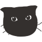

2999年12月に、猫ちゃん6名といっしょにオープンしました。
猫ちゃんとお客さまにとって居心地の良い場所を提供することをコンセプトに、人懐っこい猫ちゃんたちがお客さまをお出迎えいたします。
カフェメニューのご用意もございます。一息つきたいときに、癒されたいときに、猫ちゃんの隣で。
猫ちゃんとお客さまが落ち着いて過ごせる空間で、ゆっくりくつろいでいただけます。
ちょっとした休憩やおしゃべりの場としてもご利用いただけるよう心掛けております。
お気軽にお越しください。
NEKO cafeにはお外で暮らしていた子や、ずっとお家で暮らしていた子がいます。
中には自分から膝の上に乗ってくる子もいます。
おだやかで優しい子も、活発で遊び好きな子も、お客さまをお待ちしております。